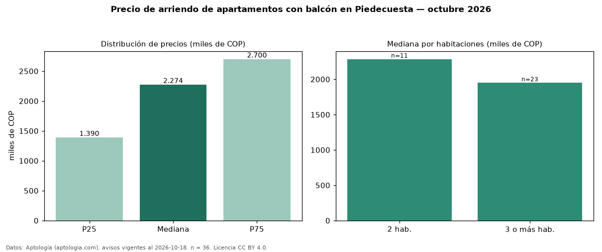

Precio de arriendo de apartamentos con balcón en Piedecuesta — octubre 2026
Con 36 avisos vigentes, el canon mediano de apartamentos con balcón en arriendo en Piedecuesta es COP 2,27 millones al mes. Frente a la mediana de todos los apartamentos en arriendo de Piedecuesta (COP 1,30 millones, n = 67), queda 75 % por encima; este segmento reúne el 54 % de esos avisos. Por metro cuadrado, la mediana es COP 29.747/m² al mes (n = 33), 34 % por encima del conjunto de referencia (COP 22.222/m²). El área mediana anunciada es 75 m². El segmento con más oferta es el de 3 o más habitaciones (23 avisos, mediana COP 1,95 millones); pasar de 2 habitaciones a 3 o más habitaciones cambia la mediana −15 %. La administración mediana declarada es COP 315.000 al mes (n = 23), aparte del canon. La mitad central de los avisos va de COP 1,39 millones a COP 2,70 millones (razón 1,9), una dispersión moderada. El estrato más frecuente es 3 (42 % de los avisos con estrato). Datos: Aptología (aptologia.com), CC BY 4.0 — https://www.aptologia.com/arriendo/piedecuesta. Archivos: PDF, CSV con las cifras y gráfica PNG.

| Avisos únicos | 36 |
|---|---|
| Percentil 25 | COP 1.390.000 |
| Mediana | COP 2.273.500 |
| Percentil 75 | COP 2.700.000 |
| Mediana por m² | COP 29.746 |
Fuente: avisos vigentes de portales inmobiliarios recopilados por Aptología, deduplicados (mínimo 30 avisos únicos por celda). Precios pedidos, no cerrados. Fecha: 2026-10-18.